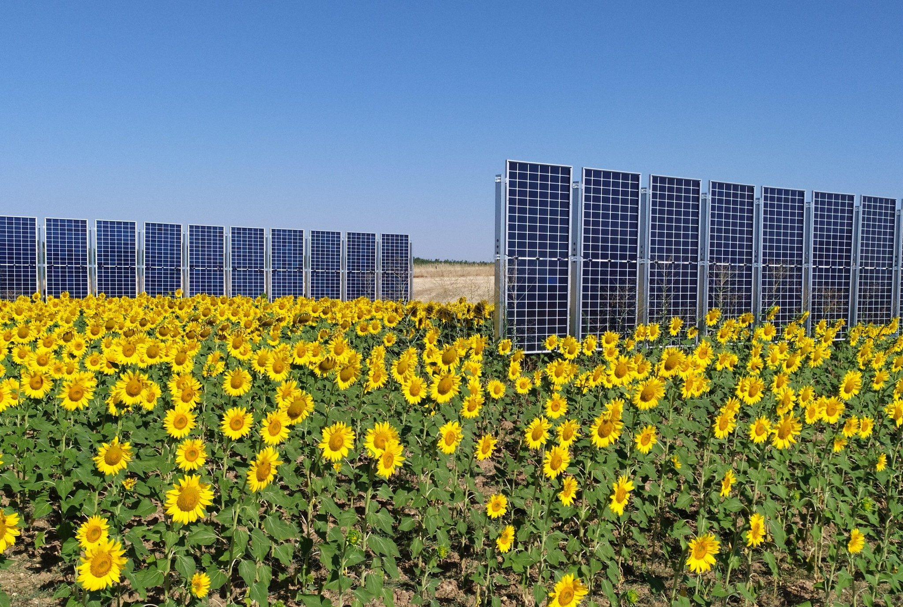

01 · Single-use vs. dual-use land
Farmers and solar developers are competing for the same lands.
Solar farms favour flat, sun-rich terrain: the same land as our best farms. Our rows take 5% of it; the rest keeps farming.
Single-use land
Conventional solarPanelsFixed, facing south, tilted at about 30°
Between rowsAbout 5 m
SunlightBlocked: the land stops being farmland
MachineryRestricted access
Dual-use land
eki.labsPanelsBifacial, in rows facing east and west
Between rows10–18 m
SunlightReaches the crops; morning and evening shade helps the soil keep its moisture
MachineryFull compatibility
02 · The science
Aligned with demand.
Our rows face east and west, so they produce in the morning and in the evening, when demand peaks and electricity is worth the most. Conventional panels produce mostly at midday, when solar floods the grid and prices fall: then the light goes to our crops.
One day in June, hour by hourIllustrative data · hover to move through the day
03 · Field tests
Tested on real cereal farmlands (wheat and barley) in Zamora, Spain.
One year of real data from our pilot in Zamora, installed with grants from Harvard and MIT and compared with a control plant of fixed, south-facing panels.
−%Land
+%Energy
+%Revenue
Less dust on the panelsMaintenance

Validated in the field
StructurePatented racking, anchored without cement. Less shade on the crops, more airflow, machinery-ready.
PanelsBifacial modules selected for east-west rows and diffuse light, with extra yield from light reflected by the crops (albedo) and cooler panels.
ResilienceWithstood winds of over 130 km/h in real farming conditions.
04 · The process
From survey to the first kilowatt-hour.
The rows go in, the tractor keeps working the land, the crops grow and the sun does the rest.
From field tests to commercial plants.
If you are an investor, get in touch.